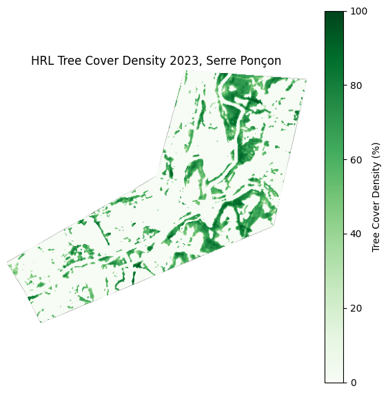
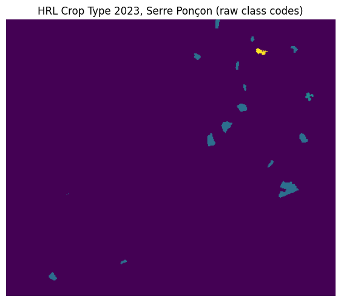
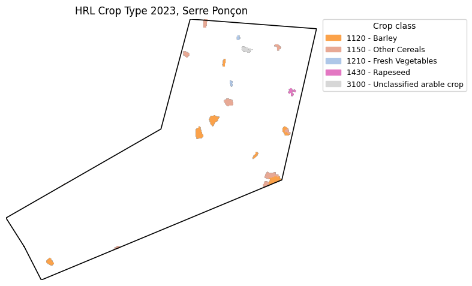
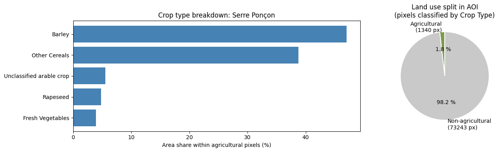
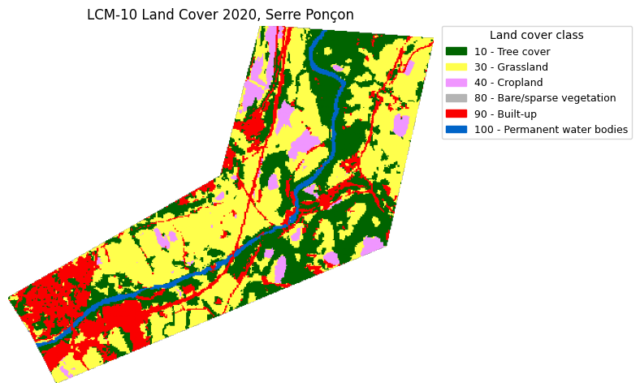
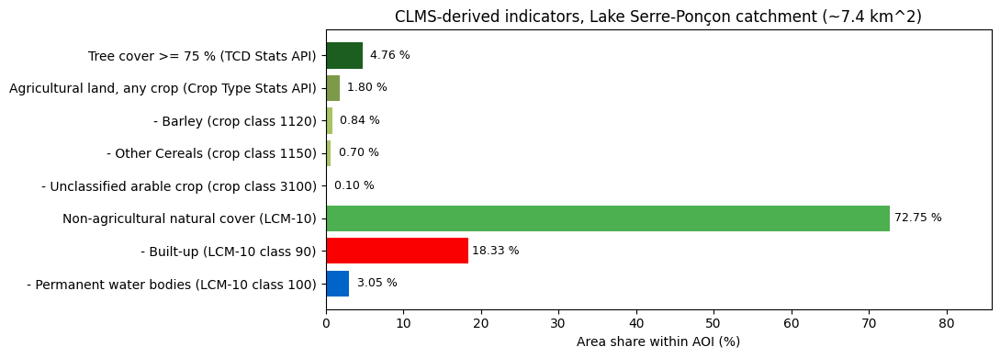
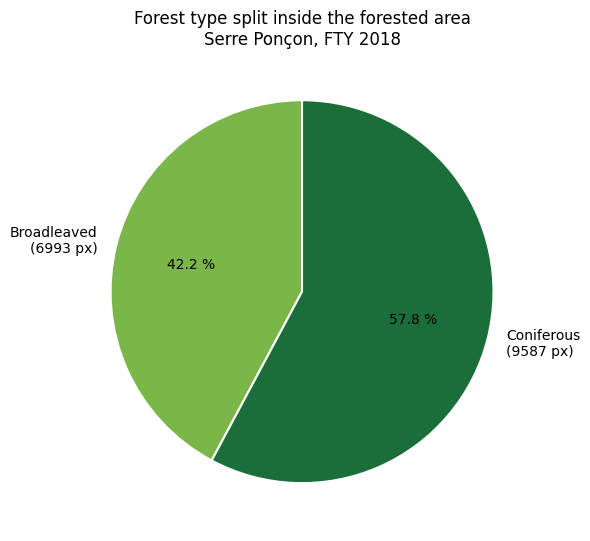

# Setup: imports, Sentinel Hub config, and CDSE authentication.
import json
from pathlib import Path
import folium
import matplotlib.patches as mpatches
import matplotlib.pyplot as plt
import numpy as np
import pandas as pd
from matplotlib.colors import ListedColormap
from shapely.geometry import shape
from sentinelhub import (
CRS,
DataCollection,
Geometry,
MimeType,
SentinelHubRequest,
SentinelHubStatistical,
SHConfig,
)Accessing CLMS data via Copernicus Data Space Ecosystem (Module 2)
This notebook is a hands-on introduction to the Copernicus Data Space Ecosystem (CDSE) Sentinel Hub APIs using CLMS data. It is built around the following use-case: Zero Pollution monitoring, specifically how landscape composition explains nitrate concentrations in European surface waters.
In this example workflow, three Copernicus Land Monitoring Service (CLMS) High-Resolution Layers act as predictors of nitrate dynamics:
- Tree Cover Density (TCD): areas with high tree cover (typically ≥ 75 %) act as a proxy for runoff mitigation and nitrate retention by riparian vegetation.
- Crop Types: used to identify and quantify the percentage of different crop types within the area of influence.
- LCM-10 (Land Cover Map at 10 m, Global, Annual V1): used to characterise non‑agricultural land cover classes (e.g. shrubs, forests, herbaceous vegetation) surrounding monitoring stations.
These indicators are then used as fixed-effect predictors in a linear mixed-effects model. This notebook stops at the indicator-extraction stage. We will not do any statistical modelling here.
Learning objectives
By the end of this notebook you will be able to:
- Authenticate against the CDSE Sentinel Hub APIs using OAuth client credentials.
- Load an Area of Interest (AOI) as a polygon from a GeoJSON file (in any CRS supported by Sentinel Hub).
- Fetch a CLMS BYOC (Bring Your Own COG) raster for that AOI using the Process API.
- Visualise the raster.
- Compute area-percentage statistics on the server-side via the Statistical API.
- Adapt the workflow to your own AOIs / products.
Prerequisites
- A free CDSE account at https://dataspace.copernicus.eu/.
- OAuth client credentials (a client ID and client secret) generated from the CDSE Sentinel Hub Dashboard at https://shapps.dataspace.copernicus.eu/dashboard/.
- The Python packages
sentinelhub,geopandas,shapely,folium,matplotlib,pandas, andnumpy.
Environment setup
If you are running this notebook in the Jupyter Lab environment of the Copernicus Data Space Ecosystem, all required packages are already installed and no setup is needed.
If you are running this notebook elsewhere (locally or on another cloud platform), you can install the dependencies with:
pip install sentinelhub folium matplotlib numpy pandas shapelyor if you use the uv package manager:
uv add sentinelhub folium matplotlib numpy pandas shapelyOutline
- Setup and authentication
- Defining an Area of Interest
- Define the CLMS collections (BYOC)
- Fetch the Tree Cover Density raster (Process API)
- Fetch the Crop Types raster (Process API)
- Compute area statistics with the Statistical API
- Crop Type area percentages from the raster
- Fetch non-agricultural land cover (LCM-10)
- Recap: all CLMS-derived indicators on one chart
- Try it yourself
1. Setup and Authentication
Sentinel Hub uses OAuth 2.0 client credentials for authentication. In practice this means you generate a client_id and a client_secret once in the CDSE Sentinel Hub Dashboard, and the sentinelhub Python library uses them behind the scenes to obtain short-lived access tokens for each API call. You never have to manage tokens yourself.
You can create or retrieve your credentials at the CDSE Sentinel Hub Dashboard: https://shapps.dataspace.copernicus.eu/dashboard/. Look for the User Settings section and create a new OAuth client.
We load these credentials from environment variables rather than hard-coding them. This is a basic security practice: secrets in source files often end up committed to version control by accident, while environment variables stay on the machine that runs the code.
Two service URLs matter here:
sh_token_url: the endpoint that exchanges your client credentials for an access token.sh_base_url: the base URL for all Sentinel Hub API calls.
The next cell loads the credentials, configures the SHConfig object, and verifies that everything is in place.
# CDSE service endpoints.
config = SHConfig()
# config.sh_client_id = ""
# config.sh_client_secret = ""
config.sh_token_url = "https://identity.dataspace.copernicus.eu/auth/realms/CDSE/protocol/openid-connect/token"
config.sh_base_url = "https://sh.dataspace.copernicus.eu"
print("Sentinel Hub config ready.")
print(f" token_url: {config.sh_token_url}")
print(f" base_url: {config.sh_base_url}")
print(f" client_id set: {bool(config.sh_client_id)}")
print(f" client_secret set: {bool(config.sh_client_secret)}")Sentinel Hub config ready.
token_url: https://identity.dataspace.copernicus.eu/auth/realms/CDSE/protocol/openid-connect/token
base_url: https://sh.dataspace.copernicus.eu
client_id set: True
client_secret set: True2. Define an Area of Interest
Sentinel Hub accepts an AOI either as a bounding box or a polygon. For environmental monitoring use-cases a polygon is often more flexible, as a user may want to provide an input area as a station catchment, a protected-area boundary, or an upstream-flow buffer in GeoJSON format.
For this demo we load a polygon around Lake Serre-Ponçon in the French Alps (Hautes-Alpes, France) from a GeoJSON file shipped next to this notebook (data/serre_poncon_3035.geojson). You can explore a recent Sentinel-2 image of the lake in the Copernicus Browser.
Lac de Serre-Ponçon is a voluminous artificial reservoir located in the French Alps, formed by the Durance and Ubaye rivers. Holding a maximum capacity of approximately 1.27 billion cubic meters of water, the lake exhibits pronounced seasonal hydrological variations driven primarily by alpine snowmelt and regional precipitation patterns. Consequently, this controlled aquatic environment provides a highly relevant geographical baseline for scientific investigations into watershed management, sediment transport dynamics, and the ecological impacts of large-scale river flow regulation.
A note on CRS: the GeoJSON is in EPSG:3035 (ETRS89 / LAEA Europe), the standard equal-area projection for pan-European analyses. Sentinel Hub accepts a Geometry together with its CRS. Working in a metric CRS like EPSG:3035 also makes resolutions intuitive, as they are defined in the unit of the project: resolution=(10, 10) represents 10 metres per pixel.
# Load the Serre Ponçon AOI polygon (EPSG:3035 / LAEA Europe) from disk.
aoi_path = Path("/home/jovyan/samples/sentinelhub/data/serre_poncon_3035.geojson")
aoi_polygon = shape(json.loads(aoi_path.read_text(encoding="utf-8")))
# Wrap as a Sentinel Hub `Geometry` together with its CRS.
AOI_GEOMETRY = Geometry(aoi_polygon, crs=CRS("3035"))
# The bounding rectangle (in EPSG:3035, metres) determines output raster
# dimensions. Pixels outside the polygon will come back with dataMask=0.
AOI_BBOX = AOI_GEOMETRY.bbox
print("AOI: Serre Ponçon (Hautes-Alpes, France)")
print(" CRS: EPSG:3035 (LAEA Europe, units = metres)")
print(f" area: {aoi_polygon.area / 1e6:.2f} km^2")
print(f" bounding rectangle: {tuple(round(v, 1) for v in AOI_BBOX)}")
# Reproject to WGS84 for the Folium preview map.
aoi_geom_wgs = AOI_GEOMETRY.transform(CRS.WGS84)
center_lon, center_lat = aoi_geom_wgs.geometry.centroid.coords[0]
m = folium.Map(location=[center_lat, center_lon], zoom_start=12, tiles="OpenStreetMap")
folium.GeoJson(
aoi_geom_wgs.geometry.__geo_interface__,
name="AOI",
style_function=lambda _: {"color": "red", "weight": 2, "fillOpacity": 0.1},
tooltip="Serre Ponçon AOI",
).add_to(m)
mAOI: Serre Ponçon (Hautes-Alpes, France)
CRS: EPSG:3035 (LAEA Europe, units = metres)
area: 7.38 km^2
bounding rectangle: (4040549.4, 2388143.4, 4045018.7, 2391900.1)Make this Notebook Trusted to load map: File -> Trust Notebook
3. Define the CLMS Collections (BYOC)
BYOC stands for Bring Your Own COG (Cloud-Optimised GeoTIFF). It is the mechanism by which Sentinel Hub exposes datasets that are not part of the standard Sentinel mission archive. CLMS publishes its products as COGs on CDSE object storage; each product is registered as a BYOC collection identified by a UUID collection_id. Once registered, anyone with a CDSE account can query the collection through the standard Sentinel Hub APIs: Process, Statistical, Catalog, or Batch, exactly like a built-in dataset.
Where to find collection IDs
The official catalogue of CLMS collections available on CDSE Sentinel Hub lives at:
https://documentation.dataspace.copernicus.eu/APIs/SentinelHub/Data/CLMS.html
That page is an index, organised by product family (vegetation, land cover, water, snow, …). To get the collection_id for a specific product:
- Open the index page above and navigate to the product family (e.g. Land Cover and Land Use Mapping → Tree Cover and Forests).
- Click through to the dataset’s own page (e.g. TCD 10m Yearly (2018-present)).
- The dataset page lists each available collection (main layer + confidence layer, where applicable) in a two-column table. The right-hand column is the UUID you need.
- To use a UUID in a Sentinel Hub API request, prepend
byoc-. In Python with thesentinelhubpackage, pass it directly toDataCollection.define_byoc(collection_id, name=...)without the need for thebyoc-before.
Collections used in this notebook
- High-Resolution Layer Tree Cover Density (TCD): see the product page on CDSE docs.
collection_id:3751d55a-7370-4071-9543-493ec3341d16- Band:
TCD, integer percentage0–100(proportion of pixel covered by tree canopy). - Native resolution: 10 m.
- High-Resolution Layer Crop Types: see the product page on CDSE docs.
collection_id:4fa71893-371f-4440-97c4-917f569f67b2- Band:
CTY, integer class codes for 19 crop classes (e.g. 1110 Wheat, 1120 Barley, 2100 Grapes, 2200 Olives). - Native resolution: 10 m.
- LCM-10 (Land Cover Map at 10 m, Global, Annual V1), see the product page on CDSE docs.
collection_id:828f6b20-8ffd-48f8-a1da-fefd271456db- Band:
LCM10, integer class codes for 12 global land-cover classes. - Native resolution: 10 m.
- Available years: 2020 only (in CDSE today; the product is described as the “2020 base year”). We therefore switch to 2020 for this layer. This is a small but realistic example of having to check temporal coverage on a per-product basis.
The next cells store these IDs as constants we reuse throughout the notebook.
# Wrap the two CLMS BYOC collection IDs as DataCollection objects.
TCD_COLLECTION_ID = "3751d55a-7370-4071-9543-493ec3341d16"
CROP_TYPE_COLLECTION_ID = "4fa71893-371f-4440-97c4-917f569f67b2"
tcd_byoc_collection = DataCollection.define_byoc(TCD_COLLECTION_ID, name="HRL_TCD_2023")
crop_type_byoc_collection = DataCollection.define_byoc(
CROP_TYPE_COLLECTION_ID, name="HRL_CropType_2023"
)
print(f"TCD collection: {tcd_byoc_collection.name} ({TCD_COLLECTION_ID})")
print(
f"Crop Type collection: {crop_type_byoc_collection.name} ({CROP_TYPE_COLLECTION_ID})"
)TCD collection: HRL_TCD_2023 (3751d55a-7370-4071-9543-493ec3341d16)
Crop Type collection: HRL_CropType_2023 (4fa71893-371f-4440-97c4-917f569f67b2)4. Fetch the Tree Cover Density Raster (Process API)
The Process API is a synchronous REST API designed for the on-the-fly processing and extraction of satellite imagery. Instead of having to download massive, raw satellite data files (which can be gigabytes in size for a single scene), this API allows you to request exactly the pixels you need, processed exactly how you want them, delivered in seconds. You give it an AOI, a time range, an output format (PNG, TIFF…), and an evalscript. It returns the processed pixel data for that AOI.
An evalscript is a small JavaScript function that runs server-side, once per pixel. It declares which input bands it needs, what output bands it produces, and how to compute them. Because it runs on the server, you only pay the bandwidth cost of the final output, not the raw bands.
The evalscript below is intentionally minimal:
- It declares two inputs: the
TCDband anddataMask. - It returns the raw
TCDvalue, plus thedataMaskvalue, as a two-band output.
dataMask is a Sentinel Hub convention: a per-pixel flag that is 1 where valid data exists and 0 where it does not (outside the product footprint, in cloud-shadow gaps, etc.). Carrying it alongside the data lets us mask invalid pixels client-side before plotting or computing statistics.
The result of the request is a numpy array of shape (height, width, 2), which we then visualise with matplotlib.
SentinelHubRequest is a Python wrapper around the Process API HTTP request. For a full list of its parameters (responses, data fusion, additional options), see the SentinelHubRequest API reference.
# Process API: fetch the HRL Tree Cover Density (TCD) raster as a numpy array.
# We deliberately keep the evalscript minimal, output the raw TCD value plus a dataMask,
# so we can do all the visualisation ourselves in matplotlib.
tcd_visualization_evalscript = """
//VERSION=3
function setup() {
return {
input: ["TCD", "dataMask"],
output: { bands: 2, sampleType: "FLOAT32" }
};
}
function evaluatePixel(s) {
return [s.TCD, s.dataMask];
}
"""
tcd_request = SentinelHubRequest(
evalscript=tcd_visualization_evalscript,
input_data=[
SentinelHubRequest.input_data(
data_collection=tcd_byoc_collection,
time_interval=("2023-01-01", "2023-12-31"),
),
],
responses=[SentinelHubRequest.output_response("default", MimeType.TIFF)],
geometry=AOI_GEOMETRY,
resolution=(10, 10),
config=config,
)
tcd_data = tcd_request.get_data()[0]
tcd = tcd_data[..., 0]
tcd_mask = tcd_data[..., 1]# Mask out pixels with no valid data.
tcd_masked = np.where(tcd_mask > 0, tcd, np.nan)
fig, ax = plt.subplots(figsize=(7, 7))
im = ax.imshow(tcd_masked, cmap="Greens", vmin=0, vmax=100)
plt.colorbar(im, ax=ax, label="Tree Cover Density (%)")
ax.set_title("HRL Tree Cover Density 2023, Serre Ponçon")
ax.set_axis_off()
plt.show()
5. Fetch the Crop Types Raster (Process API)
The Crop Types layer is categorical: each pixel value is a class code, not a continuous measurement. This has two practical consequences.
First, visualisation must use a discrete colour map: each class gets its own colour, and we add a legend so the reader can tell wheat from grapes. A continuous colour ramp would be misleading because the numerical distance between class codes carries no physical meaning.
Second, statistics are different. We do not compute the mean of class codes (that would be meaningless). Instead we count pixels per class and convert to area percentages: see Section 7.
The class codes follow a hierarchical structure:
- 1110–1150: Cereals (wheat, barley, rye, oats, maize).
- 1210–1220: Leafy and legume crops.
- 1310–1320: Root crops (potato, sugar beet).
- 1410–1440: Oil and fibre crops (rapeseed, sunflower, soya, flax).
- 2100–2320: Permanent crops (grapes, olives, fruit trees, nuts).
- 3100–3200: Unclassified or other arable land.
To make the categorical map readable we define CROP_CLASSES (code → label) and CTY_COLORS (code → hex colour). The colours are taken directly from the official CLMS SLD style so the visualisation matches what you would see in a GIS client or the Copernicus Browser. We then plot with a ListedColormap and a custom legend.
# Process API: fetch the HRL Crop Type (CTY) raster, also as a numpy array.
# Official CLMS HRL Crop Type 2023 class codes -> human-readable name.
CROP_CLASSES = {
1110: "Wheat",
1120: "Barley",
1130: "Maize",
1140: "Rice",
1150: "Other Cereals",
1210: "Fresh Vegetables",
1220: "Dry Pulses",
1310: "Potatoes",
1320: "Sugar Beet",
1410: "Sunflower",
1420: "Soybeans",
1430: "Rapeseed",
1440: "Flax cotton and hemp",
2100: "Grapes",
2200: "Olives",
2310: "Fruits",
2320: "Nuts",
3100: "Unclassified arable crop",
3200: "Unclassified permanent crop",
}
# Official CTY colours
CTY_COLORS = {
1110: "#ee6e32",
1120: "#fba24a",
1130: "#fadc14",
1140: "#e94301",
1150: "#e8a995",
1210: "#aec7e8",
1220: "#4897bf",
1310: "#c98c43",
1320: "#9c5b0c",
1410: "#ff7979",
1420: "#a86a96",
1430: "#e377c2",
1440: "#f7b6d2",
2100: "#dbdb8d",
2200: "#c1ce12",
2310: "#79a03a",
2320: "#5a7c30",
3100: "#d7d7d7",
3200: "#ababab",
}
crop_type_visualization_evalscript = """
//VERSION=3
function setup() {
return {
input: ["CTY", "dataMask"],
output: { bands: 2, sampleType: "FLOAT32" }
};
}
function evaluatePixel(s) {
return [s.CTY, s.dataMask];
}
"""
crop_request = SentinelHubRequest(
evalscript=crop_type_visualization_evalscript,
input_data=[
SentinelHubRequest.input_data(
data_collection=crop_type_byoc_collection,
time_interval=("2023-01-01", "2023-12-31"),
),
],
responses=[SentinelHubRequest.output_response("default", MimeType.TIFF)],
geometry=AOI_GEOMETRY,
resolution=(10, 10),
config=config,
)
crop_data = crop_request.get_data()[0]
cty = crop_data[..., 0]
cty_mask = crop_data[..., 1]# Display the raw Crop Type raster
fig, ax = plt.subplots(figsize=(7, 7))
plt.imshow(cty)
ax.set_title("HRL Crop Type 2023, Serre Ponçon (raw class codes)")
ax.set_axis_off()
plt.show()
# The official CLMS evalscript treats both 65535 (noData) and 0 ("no crop")
# as excluded. Pixels outside the polygon also have dataMask=0.
cty_masked = np.where((cty_mask > 0) & (cty != 65535) & (cty != 0), cty, np.nan)
# Use the official CTY colour palette; fall back to grey for any unknown code.
present_codes = sorted(int(c) for c in np.unique(cty_masked[~np.isnan(cty_masked)]))
code_to_color = {code: CTY_COLORS.get(code, "#808080") for code in present_codes}
# Build an index image: each present code -> small integer index for ListedColormap.
code_to_index = {code: i for i, code in enumerate(present_codes)}
indexed = np.full(cty_masked.shape, np.nan, dtype=float)
for code, idx in code_to_index.items():
indexed[cty_masked == code] = idx
discrete_cmap = ListedColormap([code_to_color[c] for c in present_codes])
discrete_cmap.set_bad(alpha=0) # NaN -> transparent (no "blue" fill)
# Render with the bbox in EPSG:3035 metres as the data coords so we can
# draw the polygon outline in its native CRS on top.
xmin, ymin, xmax, ymax = AOI_BBOX
extent = (xmin, xmax, ymin, ymax)
fig, ax = plt.subplots(figsize=(8, 7))
ax.imshow(
indexed,
cmap=discrete_cmap,
vmin=-0.5,
vmax=len(present_codes) - 0.5,
extent=extent,
origin="upper",
)
ax.plot(*AOI_GEOMETRY.geometry.exterior.xy, color="black", linewidth=1.2)
ax.set_aspect("equal")
ax.set_title("HRL Crop Type 2023, Serre Ponçon")
ax.set_axis_off()
# Legend with one patch per crop class actually present.
legend_handles = [
mpatches.Patch(
color=code_to_color[code],
label=f"{code} - {CROP_CLASSES.get(code, f'Unknown ({code})')}",
)
for code in present_codes
]
ax.legend(
handles=legend_handles,
bbox_to_anchor=(1.02, 1),
loc="upper left",
borderaxespad=0,
fontsize=9,
title="Crop class",
)
plt.tight_layout()
plt.show()
6. Compute Area Statistics (Statistical API)
The Statistical API runs an evalscript server-side and returns aggregated statistics over an AOI instead of pixel data. For questions like “what fraction of this catchment has high tree cover?”, this is far more efficient than fetching a raster and analysing it locally, as no pixels cross the network.
How a request is built
A SentinelHubStatistical request has four main parts:
aggregation (built with SentinelHubStatistical.aggregation()): - evalscript: same JavaScript function as the Process API. Declares input bands and output bands. The output band IDs here become the keys you reference in calculations. - time_interval: (start, end) date strings. The full interval is split into sub-intervals by aggregation_interval. - aggregation_interval: an ISO 8601 duration string: "P1Y" (one year), "P1M" (one month), "P10D" (ten days). One statistics object is returned per sub-interval, so P1Y over a single year gives one result, P1M gives twelve. - resolution: pixel size in the units of the AOI’s CRS (metres here).
input_data: the data collection(s) to query, wrapped with SentinelHubStatistical.input_data().
geometry / bbox: the AOI, same as the Process API.
calculations: a nested dictionary that controls which statistics the server computes. Top-level keys must match the evalscript output IDs. Under each output: - "statistics": descriptive stats (mean, min, max, stDev) and optional percentiles via "percentiles": {"k": [25, 50, 75]}. - "histograms": bin counts with explicit "bins" edges: used in Section 7 for per-crop-class pixel counts.
If calculations is omitted the API returns only mean, min, max and stDev with no percentiles or histograms.
What the response looks like
The result is a list of dicts (one per aggregation_interval bucket). Each dict contains "outputs" keyed by evalscript output ID, then "bands" → "B0" (or "B1", …) → "stats" and/or "histogram".
TCD use-case
As we would like to derive the proportion of areas with high tree cover density (≥ 75%) as a proxy for runoff mitigation and nitrate retention, the evalscript outputs 1 if TCD ≥ 75, otherwise 0. The mean of that binary band equals the fraction of valid pixels with TCD ≥ 75; multiplying by 100 gives the percentage of the AOI covered by dense tree canopy: directly the indicator the Zero Pollution workflow needs.
For the full parameter reference and response schema, see:
# Statistical API: what fraction of the AOI has Tree Cover Density >= 75 %?
# The Statistical API runs an evalscript on the server and returns aggregate
# statistics (mean, stdev, percentiles, ...) instead of pixels. Much cheaper than
# downloading a raster when you only need a number.
tcd_ge_75_evalscript = """
//VERSION=3
function setup() {
return {
input: [{ bands: ["TCD", "dataMask"] }],
output: [
{ id: "tcd_ge_75", bands: 1, sampleType: "FLOAT32" },
{ id: "dataMask", bands: 1 }
],
mosaicking: "SIMPLE"
};
}
function evaluatePixel(s) {
return {
tcd_ge_75: [s.TCD >= 75 ? 1 : 0],
dataMask: [s.dataMask]
};
}
"""
aggregation = SentinelHubStatistical.aggregation(
evalscript=tcd_ge_75_evalscript,
time_interval=("2023-01-01", "2024-01-01"),
aggregation_interval="P1Y",
resolution=(10, 10), # 10 m in EPSG:3035 metres
)
# `calculations` keys must match the evalscript output ids.
calculations = {"tcd_ge_75": {"statistics": {"default": {"percentiles": {"k": [50]}}}}}
tcd_stats_request = SentinelHubStatistical(
aggregation=aggregation,
input_data=[SentinelHubStatistical.input_data(tcd_byoc_collection)],
geometry=AOI_GEOMETRY,
calculations=calculations,
config=config,
)
tcd_stats = tcd_stats_request.get_data()[0]tcd_stats{'data': [{'interval': {'from': '2023-01-01T00:00:00Z',
'to': '2024-01-01T00:00:00Z'},
'outputs': {'tcd_ge_75': {'bands': {'B0': {'stats': {'min': 0.0,
'max': 1.0,
'mean': 0.04758457021036945,
'stDev': 0.2128856004718587,
'sampleCount': 168072,
'noDataCount': 93489,
'percentiles': {'50.0': 0.0}}}}}}}],
'status': 'OK',
'geometryPixelCount': 74583}# Find the mean of our 0/1 indicator.
band_stats = tcd_stats["data"][0]["outputs"]["tcd_ge_75"]["bands"]["B0"]["stats"]
mean_indicator = band_stats["mean"]
sample_count = band_stats["sampleCount"]
no_data_count = band_stats.get("noDataCount", 0)
valid_count = sample_count - no_data_count
pct_high_tcd = 100.0 * mean_indicator
print(f"% of area with Tree Cover Density >= 75 %: {pct_high_tcd:.2f} %")
print(
f" sampleCount: {sample_count} (valid pixels: {valid_count}, noData: {no_data_count})"
)% of area with Tree Cover Density >= 75 %: 4.76 %
sampleCount: 168072 (valid pixels: 74583, noData: 93489)7. Crop Type Area Percentages (Statistical API)
In Section 6 we used the Statistical API for a single continuous indicator (mean of a 0/1 mask). For the categorical Crop Type layer we can use a different feature of the same API: histogram aggregation. The server classifies pixels into bins we define, and returns the per-bin counts, so a single request gives us the area of every crop class in the AOI without ever moving raster data over the network.
Two design choices in the request below:
- Bin edges chosen to isolate each class code. The 19 official crop codes (1110, 1120, …, 3200) are not evenly spaced, so we centre a bin of width 1 on each code (
code - 0.5tocode + 0.5). The “gap” bins between codes will always be empty. dataMaskset to 0 only for the65535noData sentinel. Pixels withCTY = 0(“no crop here” , water, forest, urban, etc.) are kept in the sample. They fall below our smallest bin edge and the API counts them asunderflowCount, giving us the non-agricultural pixel count for free.
We then plot two things side by side:
- A bar chart of the area share of each detected crop class, expressed as a percentage of the agricultural pixels in the AOI (so the dominant crops stand out instead of being dwarfed by water/forest).
- A pie chart of agricultural vs non-agricultural pixels, computed as
bin countsvsunderflowCount. This single number is the cleanest summary of “how much of this catchment is farmed?”, directly relevant to the nitrate-input side of the EEA Zero Pollution model.
# Statistical API: per-class crop counts via histogram aggregation,
# plus an agricultural / non-agricultural split for the pie chart.
# Evalscript: pass through the raw CTY value. Mark only the 65535 noData
# sentinel (and pixels outside the polygon) as "no data". Pixels with
# CTY=0 ("no crop here") stay in the sample so the histogram can split
# agricultural vs non-agricultural pixels via underflowCount.
crop_class_evalscript = """
//VERSION=3
function setup() {
return {
input: [{ bands: ["CTY", "dataMask"] }],
output: [
{ id: "crop_class", bands: 1, sampleType: "FLOAT32" },
{ id: "dataMask", bands: 1 }
],
mosaicking: "SIMPLE"
};
}
function evaluatePixel(s) {
const isNoData = s.CTY === 65535 || s.dataMask === 0;
return {
crop_class: [s.CTY],
dataMask: [isNoData ? 0 : 1]
};
}
"""
# Bin edges that isolate each crop code in a width-1 bin.
# Between codes we leave wide "gap" bins that should always be empty.
crop_codes_sorted = sorted(CROP_CLASSES.keys())
crop_bin_edges = []
for code in crop_codes_sorted:
crop_bin_edges.extend([code - 0.5, code + 0.5])
calculations_crop = {
"crop_class": {
"histograms": {"default": {"bins": crop_bin_edges}},
"statistics": {"default": {"percentiles": {"k": [50]}}},
}
}
crop_aggregation = SentinelHubStatistical.aggregation(
evalscript=crop_class_evalscript,
time_interval=("2023-01-01", "2024-01-01"),
aggregation_interval="P1Y",
resolution=(10, 10),
)
crop_stats_request = SentinelHubStatistical(
aggregation=crop_aggregation,
input_data=[SentinelHubStatistical.input_data(crop_type_byoc_collection)],
geometry=AOI_GEOMETRY,
calculations=calculations_crop,
config=config,
)
crop_stats = crop_stats_request.get_data()[0]# Parse the histogram
out = crop_stats["data"][0]["outputs"]["crop_class"]["bands"]["B0"]
hist = out["histogram"]
non_agri_count = int(hist.get("underflowCount", 0)) # pixels with CTY=0
# Keep only the width-1 bins that isolate a real crop code.
crop_rows = []
for b in hist["bins"]:
width = b["highEdge"] - b["lowEdge"]
if abs(width - 1.0) < 0.01:
code = int(round(b["lowEdge"] + 0.5))
if code in CROP_CLASSES and b["count"] > 0:
crop_rows.append((code, CROP_CLASSES[code], int(b["count"])))
agri_count = sum(r[2] for r in crop_rows)
total_classified = agri_count + non_agri_count
crop_area_df = pd.DataFrame(crop_rows, columns=["code", "name", "n_pixels"])
crop_area_df["area_pct_of_agri"] = 100.0 * crop_area_df["n_pixels"] / agri_count
crop_area_df = crop_area_df.sort_values(
"area_pct_of_agri", ascending=False
).reset_index(drop=True)
print(f"Pixels with valid CTY in AOI: {total_classified}")
print(
f" agricultural (any crop): {agri_count:>6} ({100*agri_count/total_classified:5.2f} %)"
)
print(
f" non-agricultural (CTY=0): {non_agri_count:>6} ({100*non_agri_count/total_classified:5.2f} %)"
)
# Plot: bar chart + pie chart side by side
fig, (ax_bar, ax_pie) = plt.subplots(
1,
2,
figsize=(14, max(4, 0.45 * len(crop_area_df))),
gridspec_kw={"width_ratios": [3, 2]},
)
ax_bar.barh(crop_area_df["name"], crop_area_df["area_pct_of_agri"], color="steelblue")
ax_bar.invert_yaxis()
ax_bar.set_xlabel("Area share within agricultural pixels (%)")
ax_bar.set_title("Crop type breakdown: Serre Ponçon")
ax_pie.pie(
[agri_count, non_agri_count],
labels=[
f"Agricultural\n({agri_count} px)",
f"Non-agricultural\n({non_agri_count} px)",
],
colors=["#7d9a4a", "#c9c9c9"],
autopct="%1.1f %%",
startangle=90,
wedgeprops={"edgecolor": "white", "linewidth": 1.5},
)
ax_pie.set_title("Land use split in AOI\n(pixels classified by Crop Type)")
plt.tight_layout()
plt.show()
crop_area_dfPixels with valid CTY in AOI: 74583
agricultural (any crop): 1340 ( 1.80 %)
non-agricultural (CTY=0): 73243 (98.20 %)
| code | name | n_pixels | area_pct_of_agri | |
|---|---|---|---|---|
| 0 | 1120 | Barley | 630 | 47.014925 |
| 1 | 1150 | Other Cereals | 519 | 38.731343 |
| 2 | 3100 | Unclassified arable crop | 74 | 5.522388 |
| 3 | 1430 | Rapeseed | 64 | 4.776119 |
| 4 | 1210 | Fresh Vegetables | 53 | 3.955224 |
8. Non-Agricultural Land Cover (LCM-10)
In order to characterise non‑agricultural land cover classes (e.g. shrubs, forests, herbaceous vegetation) surrounding monitoring stations, we can use LCM-10.
LCM-10 class codes (pixel value -> label):
| Code | Class | Code | Class |
|---|---|---|---|
| 10 | Tree cover | 70 | Moss and lichen |
| 20 | Shrubland | 80 | Bare / sparse vegetation |
| 30 | Grassland | 90 | Built-up |
| 40 | Cropland | 100 | Permanent water bodies |
| 50 | Herbaceous wetland | 110 | Snow and ice |
| 60 | Mangroves | 254 | Unclassifiable |
We fetch the raster via the Process API (same pattern as Crop Type), visualise it with the official LCM-10 palette, and derive a single indicator: the % of the AOI in non-agricultural natural cover, the sum of Tree cover, Shrubland, Grassland, Wetland, Mangroves, Moss/lichen, and Bare/sparse vegetation. High values suggest stronger natural buffering capacity against nutrient runoff.
# Process API: fetch LCM-10 (Land Cover Map at 10 m, Global, Annual).
# We switch to 2020 here because that is the only year currently ingested for
# LCM-10 in CDSE, the product is described as the "2020 base year".
LCM_COLLECTION_ID = "828f6b20-8ffd-48f8-a1da-fefd271456db"
lcm_byoc_collection = DataCollection.define_byoc(LCM_COLLECTION_ID, name="LCM10_2020")
# Class codes -> human-readable labels (from the official LCM-10 legend).
LCM_CLASSES = {
10: "Tree cover",
20: "Shrubland",
30: "Grassland",
40: "Cropland",
50: "Herbaceous wetland",
60: "Mangroves",
70: "Moss and lichen",
80: "Bare/sparse vegetation",
90: "Built-up",
100: "Permanent water bodies",
110: "Snow and ice",
254: "Unclassifiable",
}
# Official LCM-10 colours (hex), copied from the product evalscript.
LCM_COLORS = {
10: "#006400",
20: "#ffbb22",
30: "#ffff4c",
40: "#f096ff",
50: "#0096a0",
60: "#00cf75",
70: "#fae6a0",
80: "#b4b4b4",
90: "#fa0000",
100: "#0064c8",
110: "#f0f0f0",
254: "#0a0a0a",
}
# Non-agricultural natural-cover classes.
NON_AGRICULTURAL_CLASSES = {10, 20, 30, 50, 60, 70, 80}
lcm_evalscript = """
//VERSION=3
function setup() {
return {
input: ["LCM10", "dataMask"],
output: { bands: 2, sampleType: "FLOAT32" }
};
}
function evaluatePixel(s) {
return [s.LCM10, s.dataMask];
}
"""
lcm_request = SentinelHubRequest(
evalscript=lcm_evalscript,
input_data=[
SentinelHubRequest.input_data(
data_collection=lcm_byoc_collection,
time_interval=("2020-01-01", "2020-12-31"),
),
],
responses=[SentinelHubRequest.output_response("default", MimeType.TIFF)],
geometry=AOI_GEOMETRY,
resolution=(10, 10),
config=config,
)
lcm_data = lcm_request.get_data()[0]
lcm = lcm_data[..., 0]
lcm_mask = lcm_data[..., 1]
lcm_masked = np.where((lcm_mask > 0) & (lcm != 255), lcm, np.nan)# Discrete visualisation using the official LCM-10 palette.
present_lcm_codes = sorted(int(c) for c in np.unique(lcm_masked[~np.isnan(lcm_masked)]))
lcm_code_to_index = {code: i for i, code in enumerate(present_lcm_codes)}
lcm_indexed = np.full(lcm_masked.shape, np.nan, dtype=float)
for code, idx in lcm_code_to_index.items():
lcm_indexed[lcm_masked == code] = idx
lcm_cmap = ListedColormap([LCM_COLORS.get(c, "#000000") for c in present_lcm_codes])
fig, ax = plt.subplots(figsize=(8, 7))
ax.imshow(lcm_indexed, cmap=lcm_cmap, vmin=-0.5, vmax=len(present_lcm_codes) - 0.5)
ax.set_title("LCM-10 Land Cover 2020, Serre Ponçon")
ax.set_axis_off()
ax.legend(
handles=[
mpatches.Patch(color=LCM_COLORS.get(c), label=f"{c} - {LCM_CLASSES.get(c)}")
for c in present_lcm_codes
],
bbox_to_anchor=(1.02, 1),
loc="upper left",
borderaxespad=0,
fontsize=9,
title="Land cover class",
)
plt.tight_layout()
plt.show()
# Per-class areas + the aggregate non-agricultural indicator.
valid_lcm = lcm_masked[~np.isnan(lcm_masked)].astype(np.int64)
total_lcm_pixels = int(valid_lcm.size)
codes, counts = np.unique(valid_lcm, return_counts=True)
lcm_area_df = (
pd.DataFrame(
{
"code": codes.astype(int),
"name": [LCM_CLASSES.get(int(c), f"Unknown ({int(c)})") for c in codes],
"n_pixels": counts.astype(int),
"area_pct": 100.0 * counts / total_lcm_pixels,
}
)
.sort_values("area_pct", ascending=False)
.reset_index(drop=True)
)
pct_non_agri = (
100.0 * np.isin(valid_lcm, list(NON_AGRICULTURAL_CLASSES)).sum() / total_lcm_pixels
)
print(f"% of AOI in non-agricultural natural cover: {pct_non_agri:.2f} %")
print(
f" (sum of classes: {sorted(NON_AGRICULTURAL_CLASSES & set(int(c) for c in codes))})"
)
lcm_area_df
% of AOI in non-agricultural natural cover: 72.75 %
(sum of classes: [10, 30, 80])| code | name | n_pixels | area_pct | |
|---|---|---|---|---|
| 0 | 30 | Grassland | 30450 | 40.826998 |
| 1 | 10 | Tree cover | 23795 | 31.904053 |
| 2 | 90 | Built-up | 13672 | 18.331255 |
| 3 | 40 | Cropland | 4380 | 5.872652 |
| 4 | 100 | Permanent water bodies | 2275 | 3.050293 |
| 5 | 80 | Bare/sparse vegetation | 11 | 0.014749 |
9. Recap: All CLMS-Derived Indicators on One Chart
We have now computed all the percentage-area indicators that the EEA Zero Pollution workflow uses CLMS data for, scoped to a single catchment polygon (Lake Serre-Ponçon, ~7.4 km²):
| Indicator | Source layer | Section | API used |
|---|---|---|---|
| % of each crop type in the AOI | HRL Crop Types | §7 | Statistical (histogram) |
| % tree-covered area (TCD ≥ 75 %) | HRL Tree Cover Density | §6 | Statistical (mean of 0/1) |
| % non-agricultural land cover | LCM-10 (proxy for CLCplus Backbone) | §8 | Process + numpy |
The next cell pulls every percentage we already have in memory into a single horizontal bar chart, all expressed as % of the AOI, so they are directly comparable. Indicators we could not compute, HNV farmland and Imperviousness Density, are flagged below the chart.
How quick is this?
The four API calls behind these indicators (one Process call for the TCD raster, one Statistical call for the TCD threshold, one Statistical call for the crop-type histogram, one Process call for LCM-10) typically return in a few seconds each. Producing all of these zonal indicators for a new monitoring catchment is a sub-minute operation, which is what makes this approach attractive for scaling to the hundreds or thousands of stations in the EEA water-quality network.
What you would do next
These percentages are not the end of the workflow, they are its input. In a typical pipeline they become explanatory variables in a statistical analysis of nitrate concentration:
“Linear mixed-effects modelling, combining CLMS-derived indicators (crop types, tree cover, imperviousness, land cover groups) with environmental zones as a random effect, to identify which land-related factors significantly influence observed nitrate concentrations.”
Concretely, one would:
- Loop the request pattern in this notebook over every monitoring station’s catchment, producing one row of indicators per station.
- Join that table to the measured nitrate concentrations.
- Fit a linear mixed-effects model where the CLMS percentages are fixed-effect predictors and biogeographical region is a random effect.
- Interpret which land-cover variables carry significant explanatory weight, e.g. confirming that high TCD catchments retain more nitrate while heavily-cropped catchments leak more.
The expensive part of that pipeline: getting consistent, comparable land-cover indicators across hundreds of catchments, is exactly what we have just demonstrated.
# Build a single table of every CLMS-derived percentage we have in memory,
# all expressed as "% of the AOI", and plot them on one horizontal bar chart.
# Total polygon pixel count from each Stats API call. They differ by <1 %
# because of independent rasterisation per request, we keep each indicator
# on its own denominator and report it as a percentage.
agri_total = agri_count + non_agri_count # CTY-classifiable pixels in the polygon
# Pull each indicator into a (label, percent_of_AOI, colour) tuple.
recap_rows = []
# 1) Tree Cover Density >= 75 % (Section 6, Stats API)
recap_rows.append(("Tree cover >= 75 % (TCD Stats API)", pct_high_tcd, "#1b5e20"))
# 2) Total agricultural land + top 3 crop types (Section 7, Stats API histogram)
recap_rows.append(
(
"Agricultural land, any crop (Crop Type Stats API)",
100.0 * agri_count / agri_total,
"#7d9a4a",
)
)
for _, row in crop_area_df.head(3).iterrows():
pct_of_aoi = 100.0 * row["n_pixels"] / agri_total
recap_rows.append(
(f" - {row['name']} (crop class {int(row['code'])})", pct_of_aoi, "#a8c364")
)
# 3) Non-agricultural natural cover and key LCM-10 classes (Section 8, Process API)
recap_rows.append(("Non-agricultural natural cover (LCM-10)", pct_non_agri, "#4caf50"))
for lcm_code in (90, 100): # Built-up, Permanent water bodies
sub = lcm_area_df[lcm_area_df["code"] == lcm_code]
if len(sub):
recap_rows.append(
(
f" - {LCM_CLASSES[lcm_code]} (LCM-10 class {lcm_code})",
float(sub["area_pct"].iloc[0]),
LCM_COLORS[lcm_code],
)
)
recap_df = pd.DataFrame(recap_rows, columns=["Indicator", "Percent of AOI", "Color"])
fig, ax = plt.subplots(figsize=(11, max(4, 0.45 * len(recap_df))))
bars = ax.barh(
recap_df["Indicator"], recap_df["Percent of AOI"], color=recap_df["Color"]
)
ax.invert_yaxis()
ax.set_xlabel("Area share within AOI (%)")
ax.set_title("CLMS-derived indicators, Lake Serre-Ponçon catchment (~7.4 km^2)")
ax.set_xlim(0, max(recap_df["Percent of AOI"]) * 1.18)
for bar, pct in zip(bars, recap_df["Percent of AOI"]):
ax.text(
bar.get_width() + 0.5,
bar.get_y() + bar.get_height() / 2,
f"{pct:5.2f} %",
va="center",
fontsize=9,
)
plt.tight_layout()
plt.show()
recap_df.drop(columns="Color")
| Indicator | Percent of AOI | |
|---|---|---|
| 0 | Tree cover >= 75 % (TCD Stats API) | 4.758457 |
| 1 | Agricultural land, any crop (Crop Type Stats API) | 1.796656 |
| 2 | - Barley (crop class 1120) | 0.844697 |
| 3 | - Other Cereals (crop class 1150) | 0.695869 |
| 4 | - Unclassified arable crop (crop class 3100) | 0.099218 |
| 5 | Non-agricultural natural cover (LCM-10) | 72.745800 |
| 6 | - Built-up (LCM-10 class 90) | 18.331255 |
| 7 | - Permanent water bodies (LCM-10 class 100) | 3.050293 |
10. Try It Yourself: What Kind of Forest Is in the AOI?
So far we know that 4.76 % of the Serre-Ponçon catchment has a Tree Cover Density of at least 75 % (Section 6) and 22 % of the AOI is forested in some form (broadleaved + coniferous, derived from the LCM-10 Tree cover class in Section 8). A natural follow-up question for an alpine catchment: what kind of forest is it, broadleaved or coniferous?
CLMS publishes that exact split as the HRL Forest Type (FTY) layer:
- HRL Forest Type (FTY), see the product page on CDSE docs.
collection_id:4d1aad1a-f800-43c5-87d0-5565a9a31c12- Band:
FTY, three integer classes: 0 = non-forest, 1 = broadleaved forest, 2 = coniferous forest. NoData is 255. - Native resolution: 10 m. Cadence: 3-yearly (2018, 2021).
The next cell wires up exactly the same Statistical-API-with-histogram pattern we used for Crop Types in Section 7, but applied to FTY. Try changing MY_YEAR between 2018 and 2021 to see whether the broadleaved/coniferous split has shifted at Serre-Ponçon over those three years.
Things to try after that
- Swap the AOI: drop a different polygon into
data/serre_poncon_3035.geojson(or load any other GeoJSON) and re-run the whole notebook. The same code will compute TCD, crop type, LCM-10, and FTY indicators for the new catchment. - Replace the bbox with a buffered point: build a
shapely.Pointfor a real water-monitoring station, project to a metric CRS, call.buffer(1000), and pass the resulting geometry to Sentinel Hub. - Loop over many monitoring stations and assemble the indicators into a single
pandas.DataFramefor downstream modelling. - Add another CLMS layer, e.g. the Dominant Leaf Type Change layer for forest dynamics, or the Grassland layer for pasture intensity. The pattern is identical: change the
collection_id, adjust the histogram bins or threshold, and re-run.
Further reading
- CDSE documentation: https://documentation.dataspace.copernicus.eu/
- Sentinel Hub Process API: https://docs.sentinel-hub.com/api/latest/api/process/
- Sentinel Hub Statistical API: https://docs.sentinel-hub.com/api/latest/api/statistical/
- Custom scripts (evalscripts) catalogue: https://custom-scripts.sentinel-hub.com/
- CLMS HRL Tree Cover and Forests: https://land.copernicus.eu/en/products/high-resolution-layer-forests-and-tree-cover
# === EDIT THIS TO PICK A YEAR ===
MY_YEAR = 2018 # FTY is published 3-yearly. Available years in CDSE: 2018, 2021.
# ================================
# HRL Forest Type (FTY): 0 = non-forest, 1 = broadleaved, 2 = coniferous, 255 = noData.
FTY_COLLECTION_ID = "4d1aad1a-f800-43c5-87d0-5565a9a31c12"
fty_byoc_collection = DataCollection.define_byoc(FTY_COLLECTION_ID, name="HRL_FTY")
FTY_CLASSES = {0: "Non-forest", 1: "Broadleaved", 2: "Coniferous"}
FTY_COLORS = {0: "#d9d9d9", 1: "#7ab648", 2: "#1b6e3a"}
# Stats API: histogram aggregation gives one bin per class.
# We reuse the exact same pattern as the Crop Type cell (§7): output the raw
# class value, mask only the noData sentinel (255), and let bin edges of
# [-0.5, 0.5, 1.5, 2.5] put each class in its own bin.
fty_evalscript = """
//VERSION=3
function setup() {
return {
input: [{ bands: ["FTY", "dataMask"] }],
output: [
{ id: "fty", bands: 1, sampleType: "FLOAT32" },
{ id: "dataMask", bands: 1 }
],
mosaicking: "SIMPLE"
};
}
function evaluatePixel(s) {
const isNoData = s.FTY === 255 || s.dataMask === 0;
return { fty: [s.FTY], dataMask: [isNoData ? 0 : 1] };
}
"""
fty_calculations = {"fty": {"histograms": {"default": {"bins": [-0.5, 0.5, 1.5, 2.5]}}}}
fty_aggregation = SentinelHubStatistical.aggregation(
evalscript=fty_evalscript,
time_interval=(f"{MY_YEAR}-01-01", f"{MY_YEAR + 1}-01-01"),
aggregation_interval="P1Y",
resolution=(10, 10),
)
fty_request = SentinelHubStatistical(
aggregation=fty_aggregation,
input_data=[SentinelHubStatistical.input_data(fty_byoc_collection)],
geometry=AOI_GEOMETRY,
calculations=fty_calculations,
config=config,
)
fty_resp = fty_request.get_data()[0]
# Parse the histogram
hist = fty_resp["data"][0]["outputs"]["fty"]["bands"]["B0"]["histogram"]
fty_counts = {}
for b in hist["bins"]:
code = int(round((b["lowEdge"] + b["highEdge"]) / 2))
fty_counts[code] = int(b["count"])
total_pixels = sum(fty_counts.values())
forest_pixels = fty_counts.get(1, 0) + fty_counts.get(2, 0)
print(f"FTY for Serre Ponçon, year {MY_YEAR}:")
print(f" total valid pixels in AOI: {total_pixels}")
for code, label in FTY_CLASSES.items():
n = fty_counts.get(code, 0)
print(
f" {code} {label:<12} {n:>6} px ({100 * n / total_pixels:5.2f} % of AOI)"
)
print(
f" Forest total (broadleaved + coniferous): {100 * forest_pixels / total_pixels:.2f} % of AOI"
)
if forest_pixels:
pct_broad = 100 * fty_counts.get(1, 0) / forest_pixels
pct_con = 100 * fty_counts.get(2, 0) / forest_pixels
print(
f" -> within forest: {pct_broad:.1f} % broadleaved / {pct_con:.1f} % coniferous"
)
# Plot: pie of the forested fraction (broadleaved vs coniferous)
fig, ax = plt.subplots(figsize=(6, 6))
ax.pie(
[fty_counts.get(1, 0), fty_counts.get(2, 0)],
labels=[
f"Broadleaved\n({fty_counts.get(1, 0)} px)",
f"Coniferous\n({fty_counts.get(2, 0)} px)",
],
colors=[FTY_COLORS[1], FTY_COLORS[2]],
autopct="%1.1f %%",
startangle=90,
wedgeprops={"edgecolor": "white", "linewidth": 1.5},
)
ax.set_title(f"Forest type split inside the forested area\nSerre Ponçon, FTY {MY_YEAR}")
plt.tight_layout()
plt.show()FTY for Serre Ponçon, year 2018:
total valid pixels in AOI: 74583
0 Non-forest 58003 px (77.77 % of AOI)
1 Broadleaved 6993 px ( 9.38 % of AOI)
2 Coniferous 9587 px (12.85 % of AOI)
Forest total (broadleaved + coniferous): 22.23 % of AOI
-> within forest: 42.2 % broadleaved / 57.8 % coniferous